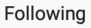
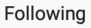

#unfollowing instagram
class Unfol:
def __init__(self, prof, foll, arrow, hastag, sortBy, latest, following, execute, res, time, tt):
self.prof = prof
self.foll = foll
self.arrow = arrow
self.hastag = hastag
self.sortBy = sortBy
self.latest = latest
self.following = following
self.execute = execute
self.res = res
self.time = time
self.tt = tt
def langkah1(self):
click(self.prof)
wait(self.foll, FOREVER)
click(self.foll)
wait(self.hastag)
click(self.arrow)
wait(self.sortBy, FOREVER)
click(self.latest)
#wait(self.following,FOREVER)
wait(10)
def langkah2(self):
for i in range(11):
if exists(self.following):
click(self.following)
wait(self.execute, FOREVER)
click(self.execute)
self.time -= 1
if self.time == 0:
self.ext()
wait(2)
else:
self.scroll()
def scroll(self):
type(Key.DOWN * 10)
def ext(self):
popup("selesai unfollow {} account".format(self.tt))
self.reset()
quit()
def reset(self):
click()
wait(,FOREVER)
click()
wait(2)
#click("1560281882482.png")
#wait("1560281901883.png",FOREVER)
#click(self.prof)
def start(self):
click( )
wait(, FOREVER)
wait(3)
click()
time = int(input("masukan total unfollow"))
tt = time
unfollowing = Unfol(
)
wait(, FOREVER)
wait(3)
click()
time = int(input("masukan total unfollow"))
tt = time
unfollowing = Unfol( , , , , , , , , Region(906,60,483,773), time, tt)
unfollowing.start()
while True:
unfollowing.langkah1()
unfollowing.langkah2()
, , , , , , , , Region(906,60,483,773), time, tt)
unfollowing.start()
while True:
unfollowing.langkah1()
unfollowing.langkah2()